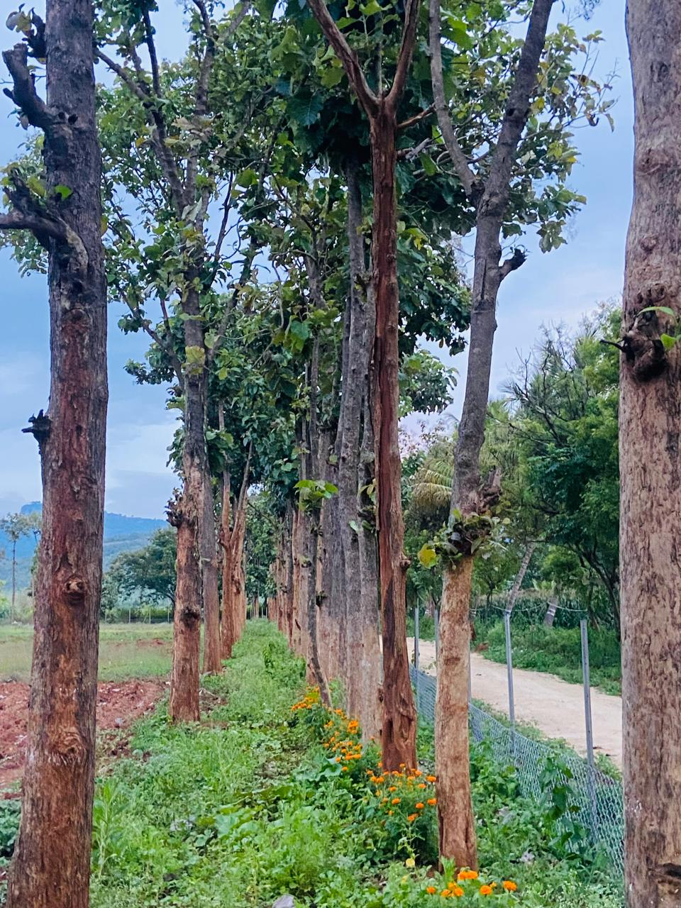
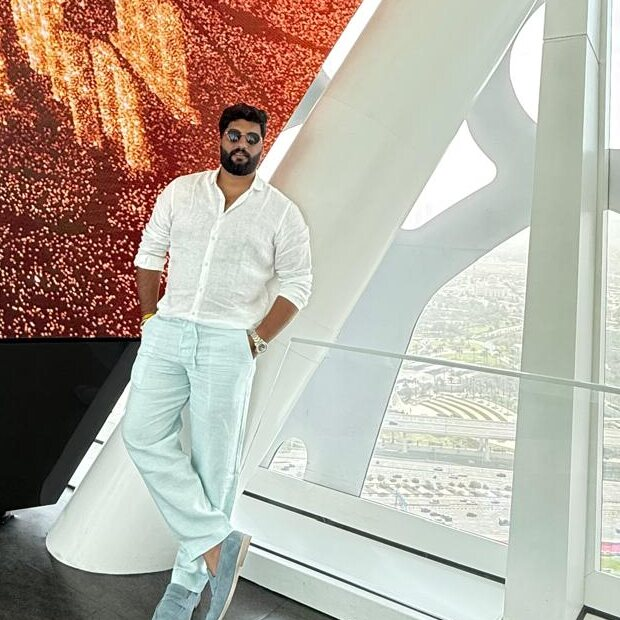

Ethical & Responsible
We employ ethical business practices and maintain the highest standards of quality and production.
Krushi Bhoomi Farms is a fully managed farmland company nestled in the red soil of Yelandur, Karnataka - 120 acres dedicated to sandalwood, fruit orchards, and sustainable livestock.
Krushi Bhoomi Farms is dedicated to redefining the way you invest in nature, agriculture, and your future. Our managed farmland initiative is built on a simple yet transformative idea - a sustainable, integrated farming ecosystem that marries financial growth with the nurturing power of nature. Founded by entrepreneurs with deep roots in both urban real estate and rural agronomy, Krushi Bhoomi Farms emerged from a desire to help modern investors reconnect with the land. Spread across 120 acres of fertile red soil in Yelandur, our carefully planned 6,500 sq.ft. plots are designed to deliver multiple streams of revenue and personal fulfillment.
To enable everyone to engage in profitable, sustainable farming through fully managed farms, ensuring long-term partnerships and growth.
To connect people with farming through responsible business models, prioritizing customer well-being, land stewardship, and ethical practices - while driving economic growth and environmental conservation.
Every decision we make - from the farmland we manage to the trees we plant - is guided by three core pillars.
We employ ethical business practices and maintain the highest standards of quality and production.

The well-being of our customers, the land, and our local communities stays at the centre of every decision.

We're dedicated to environmental conservation and preservation, alongside steady economic growth.
Land acquisition begins in Yelandur, Karnataka, laying the foundation for what would become Krushi Bhoomi Farms.
First plantation trials begin, testing sandalwood alongside native fruit-bearing trees.
Farm infrastructure takes shape - fencing, drip irrigation, and access roads are developed across the land.
Farming operations expand, with a growing focus on sustainable, integrated cultivation practices.
Groundwork is laid for a managed farmland investment model, opening the land to future plot owners.
Farm operations mature, setting the stage for the Krushi Bhoomi Farms brand.
Krushi Bhoomi Farms brand and website take shape, with sandalwood and mixed-fruit farm plots planned across 120 acres in Yelandur.
First plot booking confirmed, and farm operations take root on the ground in Yelandur.
Farm model refined to 6,500 sq.ft. plots - a blend of 40 to 50 sandalwood and fruit trees, plus a cow and sheep for every plot owner.
Digital campaigns across Facebook and Instagram bring the Krushi Bhoomi story to new investors.
Founder

Founder